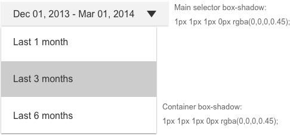
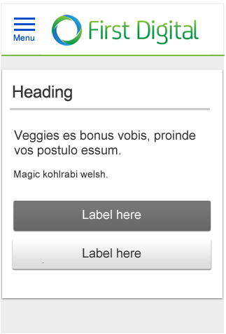
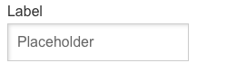
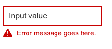
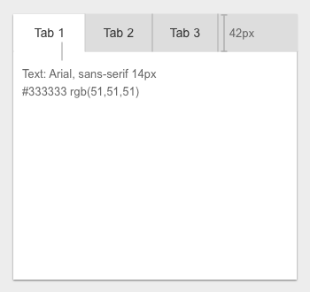

Buttons
Sizes
There are two button sizes. The default button size is 42px. The small button has a height of 35px and is used when creating a complex form with space constraints.

States Fill & Stroke Specifications

Button Interaction Details
Primary vs. Secondary Buttons
Primary: Use for the primary action that the user must take on the page.
Primary and secondary: Use both when there is a choice between two actions and one action can be recommend over the other, and/or the secondary button is used to cancel the action.
If multiple actions have equal value, then use all primary buttons.
Tertiary buttons : Used when they are not the main action on the page.
Large vs. Small Buttons
Use the large button sizes almost exclusively in designs. Exceptions are when there is not enough room on the page for the 42px height (Example: inside a table)
If there are multiple choices for non-primary actions on the page, then use the tertiary button for those actions. See examples below.
*Critical tasks should not depend on disabled buttons in order for the user to understand the action.
Other Types of Button
Input with dropdown

Toggle Buttons

The Toggle Button is divided into two segments and behaves as a single-selection control, allowing the user to click and immediately initiate an action.
The toggle state allows you to highlight the current state. Ex.: Yes/No, On/Off. It should use the FI primary accent color or the default color of #666666 in the on state.
Links as buttons
The link default color is #0055CC, and should use the financial institution’s link color
A link is used to either take action or initiate an action.
Links should be used when there are multiple actions to be taken on the page and using a push button would make the page visually heavy.
- For accessibility, links are underlined or have an icon near them to indicate that it is a tappable area.
- When the link is selected (hover, focus, or active), the underline disappears.
- Links should follow the branding color for links, which is the financial institution’s primary accent color (default color #0055CC).
- The minimum font size for links is .875 em and the maximum is 1.125 em.
- Icons can be placed at the right of the link, but they are not mandatory.
- Labeling rules apply to link buttons as well (shown later).
- For link buttons to be tablet-friendly, the padding around the link should be big enough for a user to select by touch.
- Height for the target area should be 42px.
Stand alone link
LinkThe padding around the stand-alone link (when not used as a part of another link or non-linked text) should be large enough for the user to select by touch without tapping something else accidentally; 20px minimum on each side of the tappable area.
Link with icon
Sample text
Example of a link with an icon using HEX color #333333
Sample text
Example of a link with an icon using the link color
Icons as buttons
- A standalone icon works best when the action can be represented by a symbol that is well understood. An alt value is required.
- If there is any doubt about an icon’s meaning, use a text next to it to clarify.
- An icon may have a hover state, but it is not mandatory.
- A common example of a icon used as a button is the close icon on overlays.
- Another example is the help icon.
Other Button Details

The space between buttons is always equal to 10px, regardless of the button type and size.
The width of the button is a minimum of 20px from the centered text to each edge.
At the XS breakpoint, the buttons are 100% width.

The width of the button is a minimum of 20 px from the centered text to each edge.

At the XS breakpoint the buttons are 100% width.
Processing
When a process takes several seconds, the submit button should be disabled until the process is complete and the user receives confirmation feedback.
Examples
How to use buttons on an overlay
They are left-aligned to the bottom left corner of the overlay.
Overlays also use the close icon button placed in the top right corner. This usually closes the overlay without any confirmation.
For accessibility:
When an overlay opens, the default focus is on the close button. Tab order moves from close, to the overlay content, to the primary button, and finally to the secondary button. The recommended practice is that source order determines the path, as opposed to changing the tab index of elements.

Messaging and Notifications
Visual Specifications
There are four types of page-level messages: Error, Warning, Success, and Informational.
Messages typically remain on screen until the user navigates away from or refreshes the page. If the user continues to interact with the form after successful completion of an action, it may be necessary to have the message disappear after five seconds.

The most common placement for these types of messages is 20px below the line, under the main heading.

If the form is very long, the message can be placed directly above the buttons so the user can view the message without having to scroll to the top.
L, M, S

XS

Other types of messages and notifications
Information unavailable, warning, or zero data state

Overlay messaging
L, M, S

XS

Examples
Page level message or notification example

Information unavailable

Loading

Page failure on loading

Drop Down
Visual Specifications
There are two sizes for drop downs: default and small. The use of each depends on size constraints on the page. The only items that change between the default and small size drop downs are the height and the font size.

Main drop down style (over white background)

Icons and text are centered vertically. Text: Arial 16px, #333333

Main drop down style (over gray background)

Variation:
Font size is determined by hierarchy and the space on the page.
The font color is the financial institution’s primary accent color. The drop-down arrow is provided as a vector image in the icons file. Please add the financial institution’s color to that file and save it as a .png.
If the financial institution’s primary color is not available, the default text color is #333333.

Factors That Effect Drop Down Width
Large, Med, Small
The width of the control is determined by the the location of the drop-down on the form. The minimum width of the drop-down is set by the size of the control. The drop-down control should not change its width, however there are a few use cases where the text in the control needs to be truncated or ellipsed depending on content.
Ideally the control and drop-down would remain the same width as the control; longer options will wrap in the row.
Exception to these rules: the drop down can be wider than the control width if the space is available - in this case the designer will need to set a max width for the large, med, and small breakpoints.
XS Design
The control is a tappable row, and the drop-down menu becomes a slide panel. The same rules regarding truncation on the control and wrapping on the menu apply to the XS breakpoint.
Exception to these rules: Avoid slide panels on top of slide panels in the design. In complex forms when there are many form elements, you may need to use the same drop-down control and menu that is used in the LG, MD, and S breakpoints.
Accessibility
All images must have an alt attribute (even if the function of the image is purely decorative and alt=“”). When an image has meaning to a sighted user, convey this with the alt attribute if possible. Avoid images that contain text; if they do, the alt value must contain the same string of text.
Toggle
There are two sizes for toggles: small and large. The use of each depends on the size constraints of the page.
Toggles are used for an option that the user can turn on or off. For example, Yes/No or On/Off.
The selected color for the toggle when turned “ON” is the financial institution’s primary accent color, if this color information is not available then the default color is #666666.
Use the default browser focus state.

Radio Buttons
There are two sizes for radio buttons: small and large. The use of each depends on the size constraints of the page.
Radio buttons are used when there is a list of two or more options that are mutually exclusive and the user may select only one choice. In other words, clicking a non-selected radio button will deselect whatever other button was previously selected in the list.
Use the default browser focus state.

Padding between radio-button and its label will be 10px for XS and 15px for other break points.

If there are two or more consecutive radio buttons then the padding between them will be 30px

Checkbox
Visual Specifications
There are two sizes for check boxes: small and large. The use of each depends on the size constraints of the page.
Checkboxes are used when there are lists of options and the user may select any number of choices, including none, one, or several. In other words, each checkbox is independent of all other checkboxes on the list, so checking one box does not uncheck the others. A stand-alone checkbox can be used for a single option that the user can turn on or off.
Use the default browser focus state.

Padding between checkbox and its label will be 10px for XS and 15px for other break points.

If there are two or more consecutive check boxes then the padding between them will be 30px
Accessibility
To attain the correct styling:
- The element acting as a checkbox should be focusable and selectable with the keyboard
- It must have role=“checkbox”, so that it is announced to assistive technology as a checkbox
- Aria-checked needs the right state (true or false), so it is announced when the state changes
Additional information:
https://developer.mozilla.org/en-US/docs/Web/Accessibility/ARIA/ARIA_Techniques/
Using_the_checkbox_role
http://webaim.org/techniques/forms/controls#checkbox
Modal
Visual Specifications
Modals are used when the user must confirm/take an important action, and cannot proceed until that action has been taken. Try to use modals sparingly in the design, and not when the user must take multiple steps. It is preferable to use a full page in place of a modal at the XS screen size, as modals can cause scrolling issues on mobile devices.
The modal is vertically centered in the viewport and is anchored 20px below the top of the viewport.
The minimum width is 550px in the large, medium and small screen sizes.
The modal is full-page at the XS screen size.

| Screen size | Default Padding |
| Large | 30 px, 30px, 40px, 30px |
| Medium | 30 px, 30px, 40px, 30px |
| Small | 20 px, 20px, 30px, 20px |
Examples

Accessibility
- Modals: On close, return focus to the element that activated the overlay.
- Close buttons: Images that function as a button (such as an image of an “X” to represent “Close”) must include a text equivalent. If the text equivalent is hidden from view, it must remain available for assistive technology (e.g. using text-indent to move it off screen). If it’s an img element acting as a button, it also needs an ARIA role.
- All WAI-ARIA enabled dialog boxes should be modal. A modal dialog prevents the user from setting the focus outside of the dialog until the dialog is closed. Mouse clicks outside of the dialog must be ignored, and the user must not be able to tab into or out of the dialog itself.
- All images must have an alt attribute (even if the function of the image is purely decorative and alt=“”). When an image has meaning to a sighted user, convey this with the alt attribute if possible. Avoid images that contain text; if they do, the alt value must contain the same string of text.
- Indicate: Focus; the easiest way to achieve this is to not remove default styling for the outline property.
Date Picker
Visual Specifications
The calendar can open in any direction depending on the screen space. While the calendar is open, focus should be restricted within the calendar. Date select should occur with the use of the enter button or the spacebar.
The user can type in the date or use the calendar to select the date. They should be able to type in 08-22-16, or 08/22/16, or 08/22/2016. On blur, the format should automatically change to mm/dd/yy.
If they have chosen a language where the day is listed first, then the format should read dd/mm/yy.
If today’s date is selected, it should be green with the financial institution’s color as a line around the green.

Accessibility
- Indicate: Focus; the easiest way to achieve this is to not remove the default styling for the outline property.
- All images must have an alt attribute (even if the function of the image is purely decorative and alt=“”). When an image has meaning to a sighted user, convey this with the alt attribute if possible. Avoid images that contain text; if they do, the alt value must contain the same string of text.
- On close, return the focus to the element that activated the calendar.
- Close buttons: Images that function as a button (such as an image of an “X” to represent “Close”) include a text equivalent. If the text equivalent is hidden from view, it must remain available for assistive technology (e.g. using text-indent to move it off screen). If it’s an img element acting as a button, it also needs a ARIA role
Callout
Visual Specifications
Callouts are used inside the containers at L, M, S in order to group content together. At the XS screen size the callout is removed in order to save horizontal space. However, there are instances where a callout may still be needed at XS in order to group critical information together. For example, complex forms sometimes require a callout to persist at XS in order to help the user understand the page hierarchy.

| Screen size | Padding (Top, Right, Bottom, Left) from the edge of the container to the content. |
|---|---|
| Large | 30px, 30px, 30px, 30px |
| Medium | 30px, 30px, 30px, 30px |
| Small | 20px, 20px, 20px, 20px |
| XSmall | 20px, 20px, 20px, 20px *if there is a callout on XS (not default behavior) |
Examples
Simple form
L, M, S

XS

Overlay
L, M, S

XS

Tooltips
Visual Specifications
A tooltip is used to provide a small amount of information to the user that is not critical to taking an action on the page.
Do not have users perform actions inside a tooltip.
Use tooltips sparingly as they can cause usability issues on mobile devices.
The tooltip is opened by tapping the icon. The tooltip is closed by either tapping the close corner or by tapping outside the tooltip container.
There is no tooltip hover state (cannot be accessed using touch hardware).
The tooltip can open in any direction depending on where the target is placed. (In this case the target is the “?” icon.)
The tooltip fill can be gray if it is placed on a white background, or white if placed on a gray background.
In the XS screen size, consider making the tooltip a full page as it can cause usability issues on touch devices.

Examples

Accessibility
- On close, return focus to the element that activated the tooltip.
- Close buttons: Images that function as a button (such as an image of an “X” to represent “Close”) include a text equivalent. If the text equivalent is hidden from view, it must remain available for assistive technology (e.g. using text-indent to move it off screen). If it’s an img element acting as a button, it also needs a ARIA role.
- Tool tips: Need ARIA role “tooltip” and and “aria-hidden” property. The element a tip pertains to the ARIA property “aria-describedby”.
- Style hover and focus the same way, so mouse and keyboard-only users receive consistent feedback.
Input Fields
Visual Specifications
There are two input field sizes: default and small (font size stays the same for both sizes).
Default is a 42px text box height. Small is a 35px text box height and is used when creating a complex form with space constraints.

Interaction Details
Label placement
For reduced completion time the label is placed above the field

Error placement
Inline error messages should highlight the field in red, and give the error message below the field. If there is a need to save vertical space then the message can be right aligned to the field.

Form completion best practices
- Use the fewest input fields possible to achieve the task
- Use smart defaults
- Use inline validation
- Use forgiving inputs (e.g. the multiple ways people enter phone numbers)
- When possible, use field length as an affordance
- When possible, validate the field on “blur” when user clicks out of the field
Accessibility
- Indicate: Focus; the easiest way to achieve this is to not remove default styling for the outline property.
- Close buttons: Images that function as a button (such as an image of an “X” to represent “Close”) include a text style hover and focus the same way, so mouse and keyboard-only users receive consistent feedback.
- Identify errors with more than color (i.e. also use an icon and text).
- All images must have an alt attribute (even if the function of the image is purely decorative and alt=“”). When an image has meaning to a sighted user, convey this with the alt attribute if possible. Avoid images that contain text; if they do, the alt value must contain the same string of text.4. Style hover and focus the same way, so mouse and keyboard-only users receive consistent feedback.
- Validation:
- Required elements get the required attribute and aria-required=“true”; items that fail validation get aria-invalid=“true”.
- Error feedback within a form gets the alert role to provide the information immediately to the user. A role of alert is an assertive live region, meaning the message will be delivered to the user immediately.
- When identifying failed validation, consider placing :focus on the item that needs correction.
- One of the biggest failures with forms is not sending keyboard focus to the field with an error or the list of error messages. The user may assume the form is broken, however using the alert role delivers the information immediately to assistive technology, so it’s not necessary to bring :focus to the alert node.
Tabs
Visual Specifications
Small, Medium, Large

XSmall

| Screen size | Padding for left and right of tabs |
|---|---|
| Large | 30px |
| Medium | 30px |
| Small | 20px |
| XS | 20px |